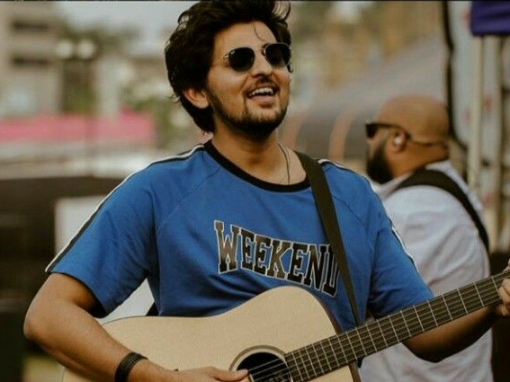

DARSHAN RAVAL
Darshan Raval (born 18 October 1994) is an Indian singer, composer and lyricist. He was born in Ahmedabad, Gujarat, India. His first on-screen appearance was in the reality show, India's Raw Star.
He was selected as Ahmedabad Times Most Desirable Man of 2017. His first independent song during India's Raw Star was Meri Pehli Mohabbat and his single, Tera Zikr, gained 200+ million views on YouTube.
In the beginning of 2019, he sang Ek Ladki Ko Dekha Toh Aisa Laga's title track .
In his interviews, he has acknowledged Himesh Reshammiya for helping him launch his career in Bollywood.
In 2020, he released several songs, including Mehrama, Asal Mein, Bhula Dunga, Saari Ki Saari 2.0, Tere Naal, Ek Tarfa, Is Qadar,Dil Mera Blast,And Rabba Mehar Kari. He also released his first album, Judaiyaan, in 2020.